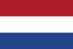

ABOUT


Renowned professionals and young talent will treat you to live jazz every Sunday afternoon. Come to café De Engelbewaarder in Amsterdam to enjoy a tasty specialty beer and the longest running live jazz session in the Netherlands!
For almost 40 years, café De Engelbewaarder on Kloveniersburgwal has been home to perhaps the most famous weekly live jazz session in the Netherlands. Legendary jazz musicians such as Woody Shaw, Archie Shepp and David Murray have performed there. To this day, café de Engelbewaarder is the place where you can enjoy top-level jazz on a lazy Sunday afternoon. After the opening set, professionals from home and abroad were invited to play along. This creates a lively session full of surprises and at a high level every Sunday afternoon. The session always ends with all participants going wild as if it were a big band. The permanent backing band consisting of Leo Bouwmeester on piano, Jacko Schoonderwoerd on double bass and Victor de Boo on drums invites a different guest player every week.